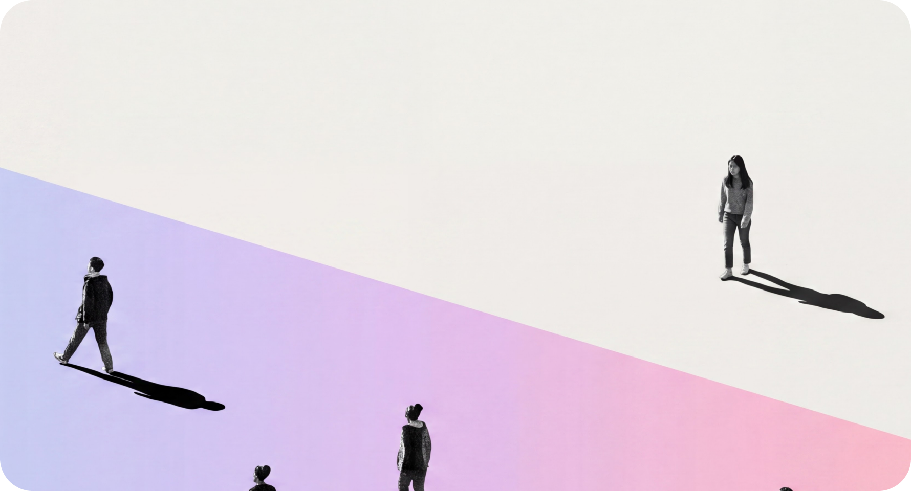

Mega Finance DNA
신한 '슈퍼SOL' 6년 전담 운영을 비롯해 KB·IBK·우리카드 등 제1금융권 핵심 플랫폼의 혁신을 주도해왔습니다. 가장 엄격한 금융의 기준 위에서 쌓아온 경험이, 어떤 프로젝트에서도 흔들리지 않는 완성도의 근거가 됩니다.


기술에 가치를 더해, 내일의 설렘을 완성합니다.
Insight
Interest
Innovation
신한 '슈퍼SOL' 6년 전담 운영을 비롯해 KB·IBK·우리카드 등 제1금융권 핵심 플랫폼의 혁신을 주도해왔습니다. 가장 엄격한 금융의 기준 위에서 쌓아온 경험이, 어떤 프로젝트에서도 흔들리지 않는 완성도의 근거가 됩니다.
금융의 정밀함부터 공공의 신뢰, 항공과 유통의 속도, 엔터프라이즈의 복잡함까지 — 산업마다 다른 본질을 이해하는 것에서 출발합니다. 경계를 넘어 축적한 인사이트로 어떤 비즈니스에도 최적의 답을 제시합니다.

LG CNS, 신한DS의 공식 협력사로서 대형 SI 프로젝트의 복잡한 협업 구조를 누구보다 잘 이해합니다. 주사업자와의 완벽한 시너지로 일정과 품질을 지키며, 규모가 큰 프로젝트일수록 인스플래닛의 진가가 드러납니다.

고유 디자인 시스템으로 일관된 품질을, 자체 AX 솔루션 R&D로 압도적인 생산성을 만듭니다. 기술과 디자인이 서로를 가속하는 구조가 프로젝트의 속도와 완성도를 동시에 끌어올립니다.

고객이 지향하는 브랜드 철학의 본질을 심도 있게 분석하여 최선의 결과물을 만들어냅니다.
브랜드의 메시지가 사용자에게 가장 친밀하게 전달되고 사람들의 마음속에 깊은 영감으로 남을 수 있도록, 보이지 않는 디테일까지 끊임없이 고민합니다.